Contact
Branding
Sonido La Kalaka
Big Ziek the Kill Dozer
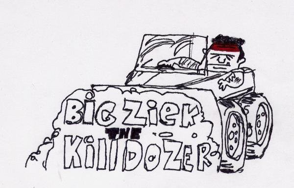
Beast Recordings
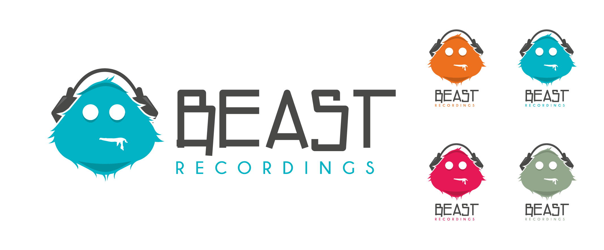 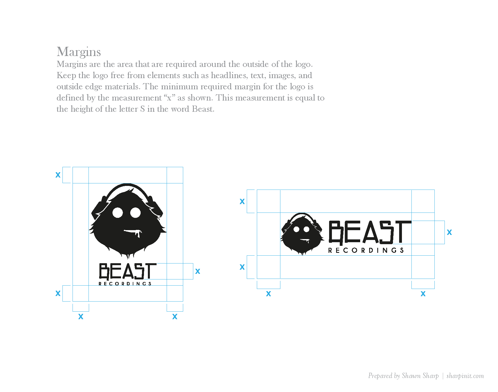 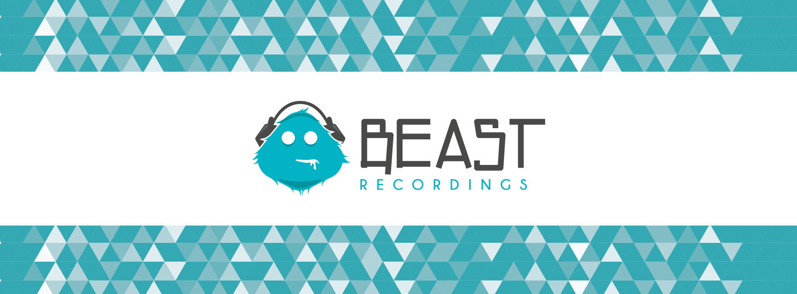
Retainers Plus
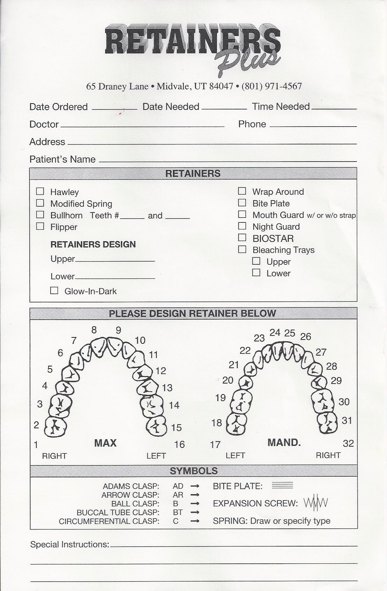 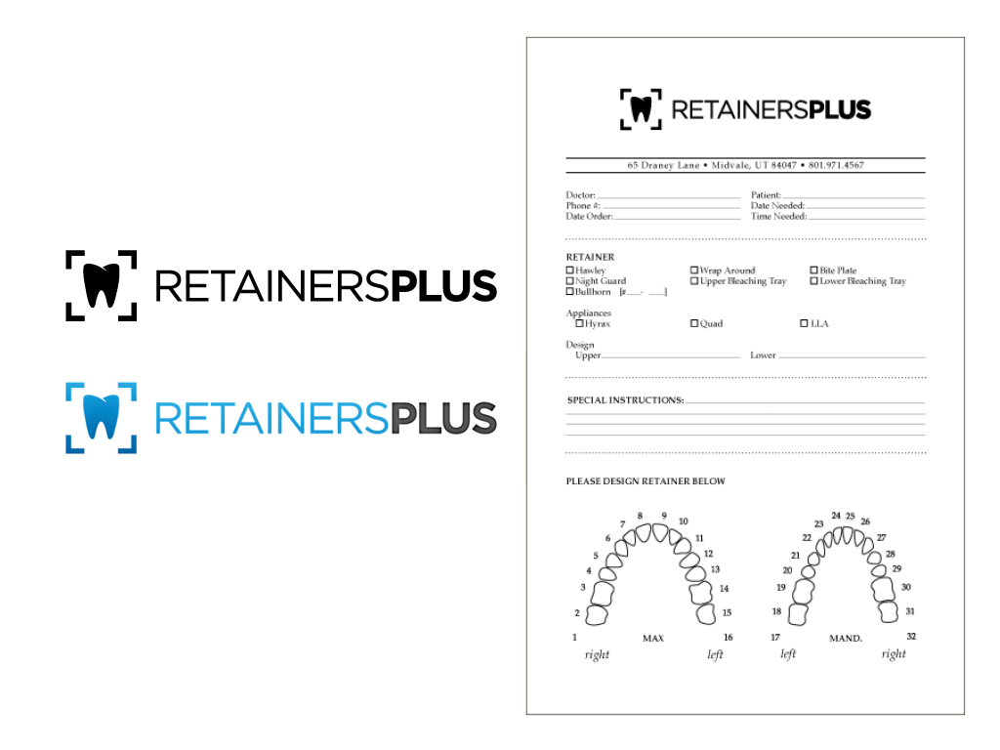
Transoil Express
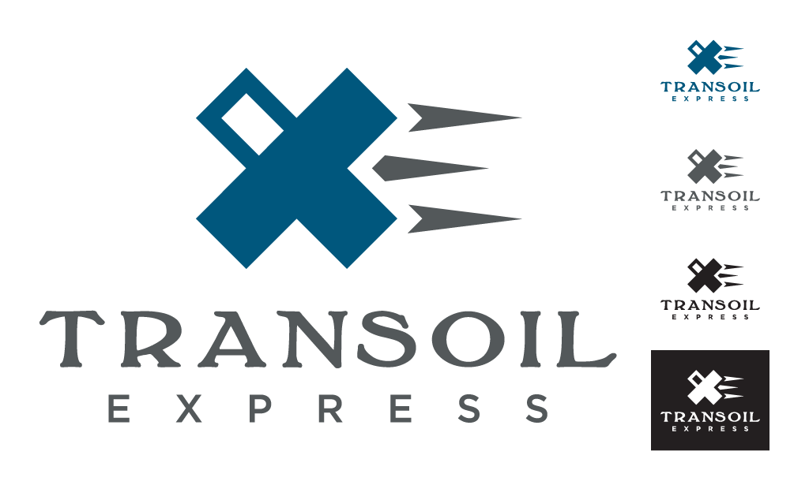 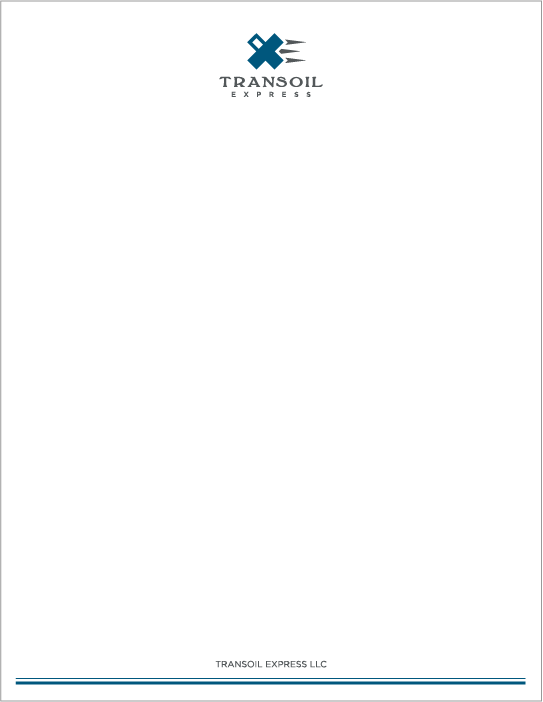 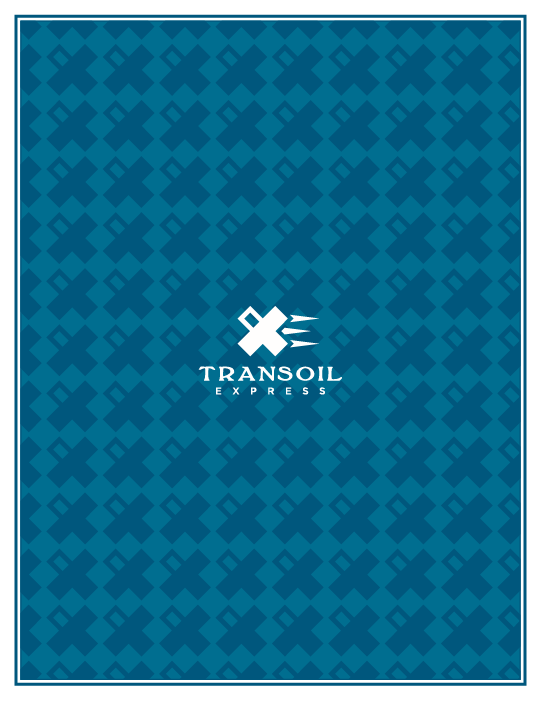
MaiKast
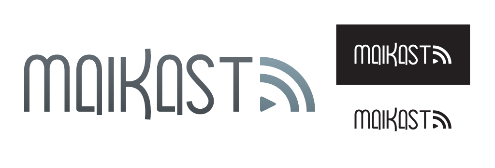
Little Mister
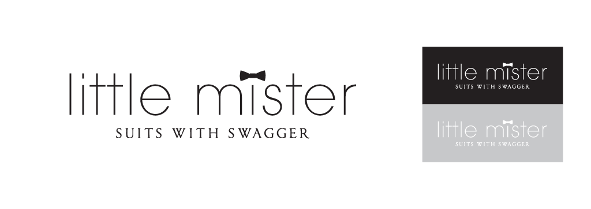
 came to me for a logo to represent the music played regularly at parties and events. The owner wanted a design that portrayed his professionalism as a DJ and the type of music he would bring to any event. I really enjoyed working with this client creating a colorful logo with strong lines and sharp angles but also got to add some material to their brand.")